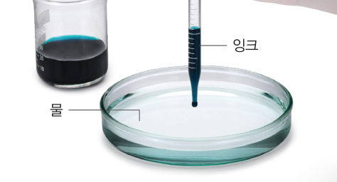
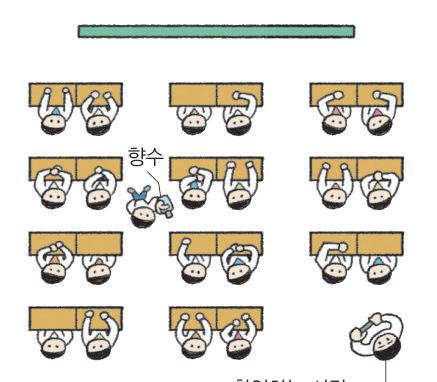
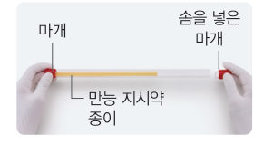
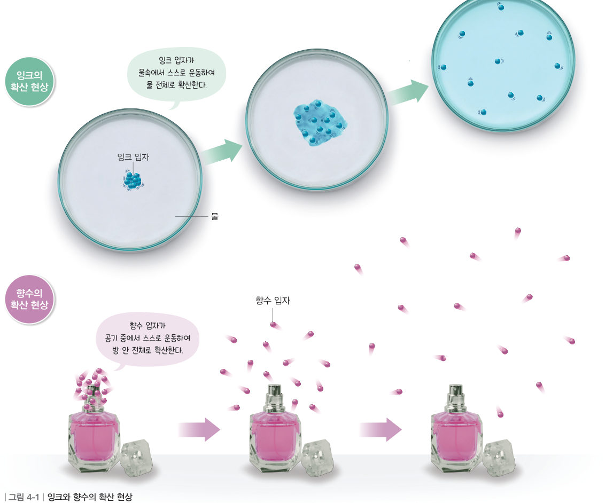
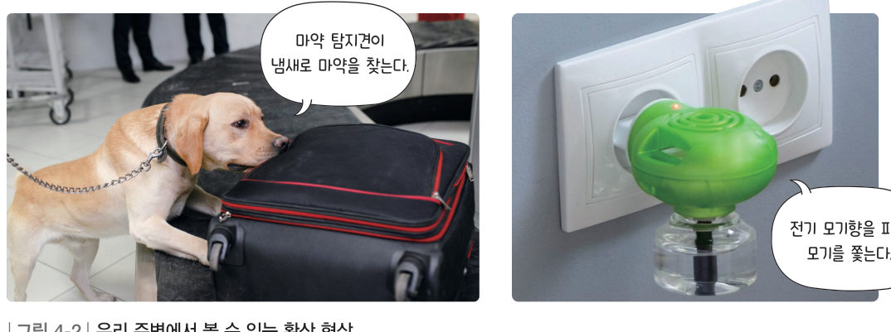
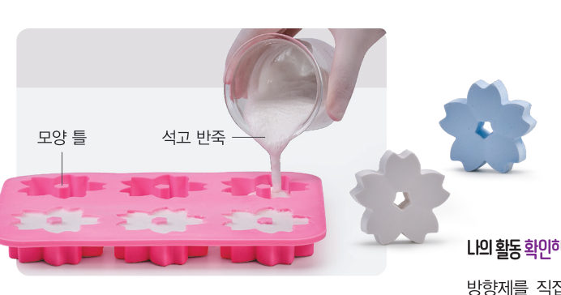

살아있는 교과서 · Ⅳ. 물질의 상태 변화 · 1. 물질을 구성하는 입자의 운동 · 01 113~117쪽
퍼져 나가는 확산 현상
“어디서 꽃향기가 나는 것 같아.” 빵 가게나 꽃 가게 앞을 지나면 가게 안으로 들어가지 않아도 냄새를 맡을 수 있다. 가상 페트리 접시와 3D 교실에서 잉크와 향수가 퍼지는 모습을 입자로 확인해 보자.
🎯 이 단원을 배우면 — 확산 현상을 관찰하여 물질을 구성하는 입자가 운동하고 있음을 설명할 수 있다.
중단원 열기첫 번째 블록 질문 113쪽
113쪽항아리 냉장고
항아리 냉장고를 만들 때는 큰 항아리 속에 작은 항아리를 넣은 다음, 그 사이에 젖은 흙을 넣어.
첫 번째 블록
젖은 흙을 두 개의 항아리 사이에 넣는 까닭은 무엇일까?
‘퍼져 나가는 확산 현상’(114쪽)과 ‘액체 표면에서 일어나는 증발 현상’(118쪽)의 힌트 블록을 모으면 답할 수 있어요. 🧩
✓이미 알고 있는 것 — 물질은 매우 작은 (으)로 구성되어 있다. 물의 표면에서 물이 수증기로 변하는 현상을 이라고 한다.
탐구 1잉크의 확산 현상 관찰하기 114쪽
확산 현상은 왜 일어날까?

114쪽물이 반 정도 들어 있는 페트리 접시에 잉크를 한 방울 떨어뜨린다.
관찰 모둠별로 스마트 기기로 동영상을 촬영할 준비를 한 다음, 물이 반 정도 들어 있는 페트리 접시에 잉크를 한 방울 떨어뜨리고 잉크의 모습을 촬영한다.
각 모둠에서 촬영한 동영상을 공유 플랫폼에 올리고 비교한다.
💡 잉크를 떨어뜨릴 때는 스포이트 끝을 수면에 가까이 한 다음 살짝 떨어뜨려 수면이 흔들리지 않도록 한다.
⚠️ 유리 기구를 다룰 때 깨지지 않게 조심한다. 잉크나 향수가 눈에 들어가지 않게 주의한다.
가상 실험가상 페트리 접시 — 위에서 내려다본 모습
접시를 누른 곳에 잉크가 떨어져요. [입자로 보기]를 켜면 눈에 보이지 않는 잉크 입자가 어떻게 움직이는지 확대해서 볼 수 있어요. 물을 휘젓지 않았는데도 잉크가 퍼지는 까닭을 찾아보자.
● REC0초
지난 시간0초
잉크가 퍼진 넓이(접시 대비)0 %
1각 모둠의 동영상에서 잉크의 모습에는 어떤 공통점이 있는가? 잉크는 퍼져 나가 시간이 지나면 물 전체가 잉크 색으로 변한다.
탐구 2향수의 확산 현상 관찰하기 115쪽

115쪽향수를 뿌린 곳과 앉아 있는 사람들
학급 구성원 중 1명이 스마트 기기로 동영상을 촬영할 준비를 하고, 앉아 있는 사람들은 눈을 감는다. (가능하면 얼굴이 나오지 않도록 뒷모습 위주로 촬영한다.)
향수병을 가진 사람은 실험실 한 지점에서 향수를 뿌리고, 앉아 있는 사람들은 향수 냄새를 맡는 즉시 손을 든다.
촬영한 동영상을 함께 보면서 손을 든 순서를 확인한다.
💡 관찰하기 전에 환기를 한 뒤, 창문을 모두 닫아 바람의 영향을 받지 않도록 한다.
3D 움직이는 교과서3D 교실에서 향수 뿌리기
향수를 뿌릴 자리를 고르고 [향수 뿌리기]를 눌러 보자. 향수 입자가 학생 자리에 닿으면 그 학생이 손을 들고 순서가 기록돼요. 드래그하면 교실이 돌아가요. 창문 열기를 켜면 바람이 어떤 영향을 주는지도 비교해 보자.
3D 교실 · 드래그하여 돌리기0초
손을 든 순서
아직 없어요.
1손을 든 순서로 알 수 있는 것은? 향수를 뿌린 곳에서 냄새를 맡았다.
2실험할 때 창문을 모두 닫는 까닭은 이다.
정리해 볼까잉크와 향수가 퍼지는 방향과 까닭 115쪽
1잉크와 향수가 퍼지는 방향의 공통점을 정리해 보자.
2추론 잉크와 향수가 퍼지는 까닭을 입자의 움직임과 관련지어 설명해 보자.
다르게 해 보기 · 암모니아의 확산 현상 관찰하기

① 만능 지시약 종이를 빨대 길이의 2/3 정도로 잘라 빨대 속에 넣고 빨대의 한쪽을 마개로 막는다. ② 다른 마개에 솜을 넣고 솜에 암모니아수를 1방울 떨어뜨린 다음, 빨대의 반대쪽 끝을 막으면서 변화를 관찰한다.
정리 만능 지시약 종이의 색은 변한다. 이는 암모니아 입자가 스스로 하여 퍼지기 때문이다.
교과서확산과 입자 운동 116~117쪽
물에 잉크를 떨어뜨리면 시간이 지남에 따라 물 전체가 잉크 색으로 변한다. 또 향수를 뿌린 곳에서 가까이 있는 사람부터 멀리 있는 사람까지 점차 향수 냄새를 맡을 수 있다. 이것은 잉크 입자나 향수 입자가 주변으로 퍼져 나가기 때문이다. 이처럼 물질을 구성하는 입자가 스스로 운동하여 퍼져 나가는 현상을 확산이라고 한다. 확산 현상에서 알 수 있듯이 물질을 구성하는 입자는 가만히 정지해 있지 않고 스스로 끊임없이 운동하는데, 이를 입자 운동이라고 한다.
잉크 입자가 확산하는 모습과 향수 입자가 확산하는 모습은 그림 4-1과 같이 나타낼 수 있다. 잉크 입자가 물속에서 퍼져 나갈 때나 향수 입자가 공기 중에서 퍼져 나갈 때 입자는 모든 방향으로 퍼져 나간다.

그림 4-1잉크와 향수의 확산 현상
확산 현상은 그림 4-2와 같이 우리 주변에서 쉽게 볼 수 있다.

그림 4-2우리 주변에서 볼 수 있는 확산 현상 — 마약 탐지견이 냄새로 마약을 찾는다 / 전기 모기향을 피워 모기를 쫓는다
해 보기방향제 만들기 117쪽

117쪽석고 반죽을 모양 틀에 붓는다.
준비물: 석고 가루 60 g, 물 20 g, 유화제 5 g, 방향유 2 g, 비커, 유리 막대, 모양 틀
석고 반죽 재료를 모두 섞어 석고 반죽을 만든다.
석고 반죽을 모양 틀에 붓고 굳을 때까지 기다린다.
굳은 석고 방향제를 교실 한쪽에 놓아두고 다른 쪽에 서서 냄새가 나는지 확인한다.
1일상생활에서 방향제를 사용하는 까닭을 확산 현상과 관련지어 이야기해 보자.
스스로 확인하기114쪽 학습 목표를 달성했는지 확인해 보자 117쪽
1개념 확인 물질을 구성하는 입자가 스스로 운동하여 퍼져 나가는 현상을 ( )(이)라고 한다.
2사고력 주유소 근처에서는 독특한 기름 냄새가 난다. 주유소에서 라이터를 사용하면 안 되는 까닭을 확산 현상과 관련지어 설명해 보자.
🧩 첫 번째 블록 · 힌트 조각 1 (117쪽)
항아리 표면에 있는 작은 구멍을 통해 ( ) 현상이 잘 일어난다. → 나머지 조각은 ‘증발 현상’에서!
5분 테스트퍼져 나가는 확산 현상
1물질을 구성하는 는 가만히 정지해 있지 않고 스스로 끊임없이 운동하는데, 이를 입자 운동이라고 한다. 물에 잉크를 떨어뜨리면 잉크 입자가 물속에서 스스로 하여 퍼져 나간다.
2옳은 것은 O, 옳지 않은 것은 X를 골라 보자.
⑤ 확산은 한쪽 방향으로만 일어난다.
⑥ 공기가 없는 곳에서도 향수 냄새는 퍼진다.
⑦ (확산의 예) 마약 탐지견이 냄새로 마약을 찾는다.
⑧ (확산의 예) 어항 속 물이 시간이 지남에 따라 점점 줄어든다.
⑨ (확산의 예) 전기 모기향을 피워 모기를 쫓는다.
⑩ (확산의 예) 고추를 오래 보관하기 위해 말린다.
스스로 정리하기확산 현상 120쪽
1확산 현상
(1) 확산: 물질을 구성하는 입자가 스스로 하여 퍼져 나가는 현상 • 물에 잉크를 떨어뜨리면 잉크 이/가 물속에서 스스로 운동하여 퍼져 나가므로 시간이 지나면 물 전체가 잉크 색으로 변한다. (2) 우리 주변에서 볼 수 있는 확산 현상 • 마약 탐지견이 (으)로 마약을 찾는다. • 전기 모기향을 피워 모기를 쫓는다.
제출학생 정보 · 제출하기
모든 활동을 마친 뒤 제출하면 전체가 한 번에 채점되고 피드백이 나타나요. 답안은 선생님 스프레드시트(중1 탭)에 기록돼요.